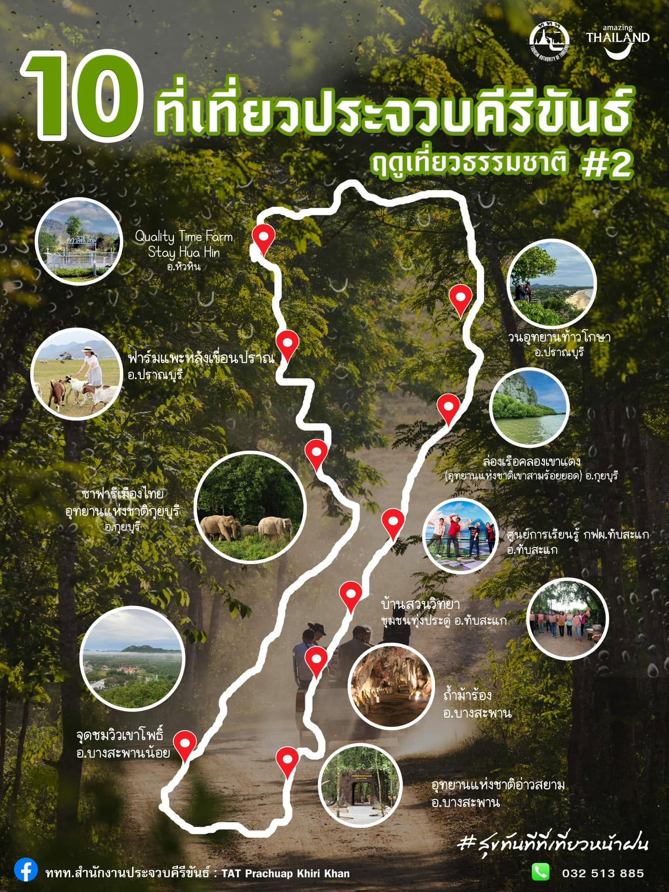

วางแผนเที่ยวในหนึ่งวัน
ตัวอย่างการจัดตารางท่องเที่ยวจังหวัดประจวบคีรีขันธ์
กำหนดการท่องเที่ยว
- 08.00 น. เดินทางไปเขาช่องกระจก ชมวิวเมืองและทะเล
- 10.00 น. แวะเที่ยวศาลหลักเมืองประจวบคีรีขันธ์
- 12.00 น. รับประทานอาหารกลางวันและเดินชมตลาด
- 14.00 น. เดินทางไปพักผ่อนที่อ่าวมะนาว
- 16.00 น. ไปชมบรรยากาศบริเวณสะพานปลา
แผนที่เส้นทางท่องเที่ยว

สามารถใช้แผนที่ประกอบการวางแผนเดินทางไปยังสถานที่ต่าง ๆ ได้
ข้อควรเตรียมก่อนเดินทาง
- ตรวจสอบสภาพอากาศ
- เตรียมโทรศัพท์และแบตเตอรี่สำรอง
- เตรียมน้ำดื่มและของใช้ส่วนตัว
- ตรวจสอบเวลาเปิดให้บริการของสถานที่